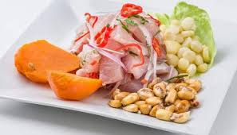

Peruvian Ceviche

Description
The traditional Peruvian ceviche
Ingredients
- Fish, 1 Kg, Haddok.
- Coriander, 1/4 cup, only leaves not stems.
- Limes, 12
- Sweetcorn, 1 cup
- Onion, 1
- Sweet potato, 2
- Lettuce leaves, 6
- Salt and Pepper
- Chilli Pepper paste
Preparation
- Cut the fish in 1 inch squares. Cut the onion in long bits.
- Mix the fish, onion and pepper paste. Add salt and pepper.
- Squeeze the juice of the limes and add to the fish mixture. Cling film and leave to rest (cold cook).
- Cook the sweetcorn and sweet potato. Let them cool.
- Serve the fish mixture with the lettuce, sweet potato and sweetcorn.
- Enjoy.